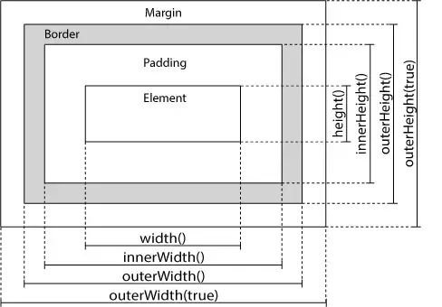

PL-RUNOOB-JQuery
jQuery is a fast, small, and feature-rich JavaScript library.
文字数：---
资源
jQuery 教程
语法
jQuery 语法是通过选取 HTML 元素，并对选取的元素执行某些操作。
基础语法： $(*selector*).*action*()
- 美元符号定义 jQuery
- 选择符（selector）“查询"和"查找” HTML 元素
- jQuery 的 action() 执行对元素的操作
实例:
$(this).hide()- 隐藏当前元素$("p").hide()- 隐藏所有<p>元素$("p.test").hide()- 隐藏所有class="test"的<p>元素$("#test").hide()- 隐藏id="test"的元素
文档就绪事件
这是为了防止文档在完全加载（就绪）之前运行 jQuery 代码，即在 DOM 加载完成后才可以对 DOM 进行操作。
1 | |
或：
1 | |
Note
JavaScript 入口函数：
1 | |
window.onload |
$(document).ready() |
|
|---|---|---|
| 执行时机 | 必须等待网页全部加载完毕（包括图片等），然后再执行包裹代码 | 只需要等待网页中的 DOM 结构加载完毕，就能执行包裹的代码 |
| 执行次数 | 只能执行一次，如果第二次，那么第一次的执行会被覆盖 | 可以执行多次，第 N 次都不会被上一次覆盖 |
选择器
jQuery 选择器允许您对 HTML 元素组或单个元素进行操作。
jQuery 选择器基于元素的 id、类、类型、属性、属性值等"查找"（或选择）HTML 元素。 它基于已经存在的 CSS 选择器，除此之外，它还有一些自定义的选择器。
jQuery 中所有选择器都以美元符号开头：$()。
Note
| 语法 | 描述 |
|---|---|
$("*") |
选取所有元素 |
$(this) |
选取当前 HTML 元素 |
$("p.intro") |
选取 class 为 intro 的 <p> 元素 |
$("p:first") |
选取第一个 <p> 元素 |
$("ul li:first") |
选取第一个 <ul> 元素的第一个 <li> 元素 |
$("ul li:first-child") |
选取每个 <ul> 元素的第一个 <li> 元素 |
$("[href]") |
选取带有 href 属性的元素 |
$("a[target='_blank']") |
选取所有 target 属性值等于 "_blank" 的 <a> 元素 |
$("a[target!='_blank']") |
选取所有 target 属性值不等于 "_blank" 的 <a> 元素 |
$(":button") |
选取所有 type="button" 的 <input> 元素 和 <button> 元素 |
$("tr:even") |
选取偶数位置的 <tr> 元素 |
$("tr:odd") |
选取奇数位置的 <tr> 元素 |
独立文件中使用 jQuery 函数
如果您的网站包含许多页面，并且您希望您的 jQuery 函数易于维护，那么请把您的 jQuery 函数放到独立的 .js 文件中。
1 | |
事件
在 jQuery 中，大多数 DOM 事件都有一个等效的 jQuery 方法。
1 | |
常用的 jQuery 事件方法
| 鼠标事件 | 键盘事件 | 表单事件 | 文档/窗口事件 |
|---|---|---|---|
| 单击：click | 按下的过程：keypress | 提交：submit | load（已废弃） |
| 双击：dblclick | 按下：keydown | 更改：change | 窗口大小更改：resize |
| 指针穿过元素：mouseenter | 松开：keyup | 获得焦点：focus | 滚动：scroll |
| 指针离开元素：mouseleave | 失去焦点：blur | unload（已废弃） | |
| 光标悬停：hover |
jQuery 效果
隐藏/显示
使用 hide() 和 show() 方法来隐藏（display: none;）和显示（display: block;） HTML 元素，使用 toggle() 切换 hide() 和 show() 方法：
语法：
1 | |
示例：
1 | |
淡入/淡出
jQuery 拥有下面四种 fade 方法：
fadeIn()：淡入已隐藏（display: none;）的元素。fadeOut()：淡出可见（display: block;）元素。fadeToggle()：在fadeIn()与fadeOut()方法之间进行切换。fadeTo()：渐变为给定的不透明度（值介于 0 与 1 之间）。
1 | |
滑动
jQuery 拥有以下滑动方法：
slideDown()：向下滑动元素（显示元素）。slideUp()：向上滑动元素（隐藏元素）。slideToggle()：在slideDown()与slideUp()方法之间进行切换。
1 | |
动画
Important
默认情况下，所有 HTML 元素都有一个静态位置，且无法移动。 如需对位置进行操作，要记得首先把元素的 CSS position 属性设置为 relative、fixed 或 absolute！
$(selector).animate({params},speed,callback);- 生成动画的过程中可同时使用多个属性
- 定义相对值（该值相对于元素的当前值）。需要在值的前面加上
+=或-= - 以把属性的动画值设置为
"show"、"hide"或"toggle"： - 在彼此之后编写多个
animate()调用，jQuery 会创建包含这些方法调用的"内部"队列（Quene）。然后逐一运行这些animate调用。
1 | |
停止动画
jQuery stop() 方法用于停止动画或效果，在它们完成之前。
stop() 方法适用于所有 jQuery 效果函数，包括滑动、淡入淡出和自定义动画。
Callback 方法
Callback 函数在当前动画 100% 完成之后执行。
链
通过 jQuery，可以把动作/方法链接在一起。
下面的例子把 css()、slideUp() 和 slideDown() 链接在一起。"p1" 元素首先会变为红色，然后向上滑动，再然后向下滑动：
1 | |
jQuery HTML
捕获
用于 DOM 操作的 jQuery 方法：
- text() - 设置或返回所选元素的文本内容
- html() - 设置或返回所选元素的内容（包括 HTML 标签）
- val() - 设置或返回表单字段的值
- attr() - 获取属性值
1 | |
设置
简单内容
1 | |
回调函数
回调函数有两个参数：被选元素列表中当前元素的下标，以及原始（旧的）值。然后以函数新值返回您希望使用的字符串。
1 | |
添加元素
append()- 在被选元素的结尾插入内容（作为子元素）prepend()- 在被选元素的开头插入内容（作为子元素）after()- 在被选元素之后插入内容before()- 在被选元素之前插入内容
1 | |
删除元素
-
remove()- 删除被选元素（及其子元素） -
empty()- 从被选元素中删除子元素-
remove()方法也可接受一个参数，允许您对被删元素进行过滤。下面的例子删除
class="italic"的所有<p>元素：1
$("p").remove(".italic");
-
CSS 类
-
addClass()- 向被选元素添加一个或多个类1
2$("div").addClass("important");
$("body div:first").addClass("important blue"); // 规定多个类 -
removeClass()- 从被选元素删除一个或多个类1
$("h1,h2,p").removeClass("blue"); // 在不同的元素中删除指定的 class 属性 -
toggleClass()- 对被选元素进行添加/删除类的切换操作1
$("h1,h2,p").toggleClass("blue"); // 对被选元素进行添加/删除类的切换操作 -
css()- 设置或返回样式属性1
2$("p").css("background-color","yellow"); // 设置 CSS 属性
$("p").css({"background-color":"yellow","font-size":"200%"}); // 设置多个 CSS 属性
尺寸

jQuery 提供多个处理尺寸的重要方法：
| 方法 | 描述 |
|---|---|
width() |
设置或返回元素的宽度（不包括内边距、边框或外边距） |
height() |
设置或返回元素的高度（不包括内边距、边框或外边距） |
innerWidth() |
返回元素的宽度（包括内边距） |
innerHeight() |
返回元素的高度（包括内边距） |
outerWidth() |
返回元素的宽度（包括内边距和边框） |
outerHeight() |
返回元素的高度（包括内边距和边框） |
jQuery 遍历
遍历
1 | |
祖先
向上遍历 DOM 树
| 方法 | 描述 |
|---|---|
parent() |
返回被选元素的直接父元素。只会向上一级对 DOM 树进行遍历。 |
parents() |
返回被选元素的所有祖先元素，它一路向上直到文档的根元素 (<html>)。 |
parentsUntil() |
返回介于两个给定元素之间的所有祖先元素。 |
1 | |
后代
向下遍历 DOM 树
| 方法 | 描述 |
|---|---|
children() |
返回被选元素的所有直接子元素。 |
find() |
返回被选元素的后代元素，一路向下直到最后一个后代。 |
同胞
同胞拥有相同的父元素。
在 DOM 树中水平遍历
| 方法 | 描述 |
|---|---|
siblings() |
返回被选元素的所有同胞元素。 |
next() |
返回被选元素的下一个同胞元素。（之后遍历） |
nextAll() |
返回被选元素的所有跟随的同胞元素。（之后遍历） |
nextUntil() |
返回介于两个给定参数之间的所有跟随的同胞元素。（之后遍历） |
prev() |
返回被选元素的下一个同胞元素。（之前遍历） |
prevAll() |
返回被选元素的所有跟随的同胞元素。（之前遍历） |
prevUntil() |
返回介于两个给定参数之间的所有跟随的同胞元素。（之前遍历） |
过滤
缩小搜索元素的范围
允许您基于其在一组元素中的位置来选择一个特定的元素。
| 方法 | 描述 |
|---|---|
first() |
返回被选元素的首个元素。 |
last() |
返回被选元素的最后一个元素。 |
eq() |
返回被选元素中带有指定索引号的元素。 |
filter() |
允许您规定一个标准。不匹配这个标准的元素会被从集合中删除，匹配的元素会被返回。 |
not() |
返回不匹配标准的所有元素。（与 filter() 相反。） |
jQuery Ajax
Ajax 简介
AJAX 是与服务器交换数据的技术，它在不重载全部页面的情况下，实现了对部分网页的更新。
AJAX = 异步 JavaScript 和 XML（Asynchronous JavaScript and XML）。
简短地说，在不重载整个网页的情况下，AJAX 通过后台加载数据，并在网页上进行显示。
load()
1 | |
-
必需的
URL参数规定您希望加载的 URL。 -
可选的
data参数规定与请求一同发送的查询字符串键/值对集合。 -
可选的
callback参数是load()方法完成后所执行的函数名称。
test.txt 里的内容如下：
1 | |
1 | |
可选的 callback 参数规定当 load() 方法完成后所要允许的回调函数。回调函数可以设置不同的参数：
responseTxt- 包含调用成功时的结果内容statusTXT- 包含调用的状态xhr- 包含 XMLHttpRequest 对象
get() 和 post() 方法
两种在客户端和服务器端进行请求-响应的常用方法是：GET 和 POST。
- GET - 从指定的资源请求数据
- POST - 向指定的资源提交要处理的数据
$.get() 方法
$.get() 方法通过 HTTP GET 请求从服务器上请求数据。
1 | |
$.post() 方法
$.post() 方法通过 HTTP POST 请求向服务器提交数据。
1 | |
- URL：发送请求的 URL 字符串。
- data：可选的，发送给服务器的字符串或 key/value 键值对。
- callback：可选的，请求成功后执行的回调函数。
- dataType：可选的，从服务器返回的数据类型。默认：智能猜测（可以是xml, json, script, 或 html）。
1 | |
jQuery 其他
noConflict() 方法
noConflict() 方法会释放对 $ 标识符的控制，这样其他脚本就可以使用它了（避免冲突）。
JSONP
Jsonp(JSON with Padding) 是 json 的一种"使用模式"，可以让网页从别的域名（网站）那获取资料，即跨域读取数据。
为什么我们从不同的域（网站）访问数据需要一个特殊的技术( JSONP )呢？这是因为同源策略。
同源策略，它是由 Netscape 提出的一个著名的安全策略，现在所有支持 JavaScript 的浏览器都会使用这个策略。
如客户想访问 : **https://www.runoob.com/try/ajax/jsonp.php?jsoncallback=callbackFunction**。
假设客户期望返回数据：["customername1","customername2"]。
真正返回到客户端的数据显示为: callbackFunction(["customername1","customername2"])。
服务端文件 jsonp.php 代码为：
1 | |
1 | |
jQuery 插件
| 插件 | 介绍 |
|---|---|
| jQuery Validate | 用于表单验证的插件，可以通过简单的配置对表单字段进行验证（如必填项、格式验证等）。 |
| jQuery Cookie | 提供了操作浏览器 Cookie 的功能，可以轻松设置、获取或删除 Cookie 数据。 |
| jQuery Accordion | 创建折叠菜单效果的插件，通常用于将内容分组，用户可以展开或折叠特定部分。 |
| jQuery Autocomplete | 实现自动完成输入功能的插件，例如在搜索框中输入时根据已有数据提供建议。 |
| jQuery Growl | 一个用于显示通知或提示框的插件，通常以动态弹出框的形式呈现消息。 |
| jQuery Password Validation | 是用于密码验证。 |
| jQuery Prettydate | 提供友好时间显示的插件，例如将时间戳转换为“刚刚”或“5 分钟前”的格式。 |
| jQuery Tooltip | 用于创建工具提示的插件，当鼠标悬停在元素上时显示附加信息。 |
| jQuery Treeview | 提供树形菜单结构的插件，通常用于展示分层数据或导航。 |